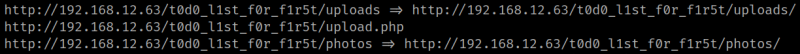

3.4 Feroxbuster
Feroxbuster
is a tool designed to perform Forced Browsing. Forced browsing is an attack where the aim is to enumerate and access resources that are not referenced by the web application, but are still accessible by an attacker. feroxbuster uses brute force combined with a wordlist to search for unlinked content in target directories. These resources may store sensitive information about web applications and operational systems, such as source code, credentials, internal network addressing, etc… This attack is also known as Predictable Resource Location, File Enumeration, Directory Enumeration, and Resource Enumeration.
1. Use “feroxbuster” to enumerate more resources.
$ feroxbuster -u http://192.168.12.63/t0d0_l1st_f0r_f1r5t -x txt,php,html,zip,htm,bak,pem -o ferx.log
Output:

There's an “upload.php” file you can use to upload an exploit. And there's an “uploads” directory where it seems the files are uploaded.